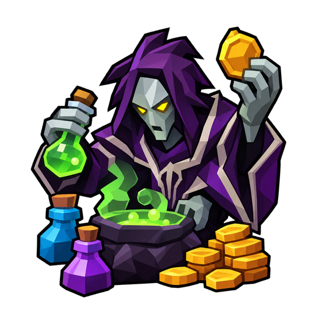

What To Brew
Loading prices…
Use my own auction scan
- Install the What To Brew addon, this site's in-game companion.
- In game, open your Alchemy window once, then open the auction house.
- Type /brew, press Scan all and wait for it to finish (a few minutes).
- Press Export, then Ctrl+C, and paste the text below.
| Have |
Craft |
Skill |
Mats |
Sells for |
Profit |
Margin |
Sold/day |
Listed |
Per day |
Recipe |
Break-even |